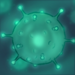
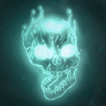
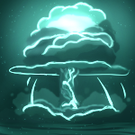

Samuel C. “M.I.D.A.S” Lightkeeper

M.I.D.A.S´s touch
El objetivo de los ataques básicos de MIDAS le será aplicado un efecto de estado permanente que infligirá daño no-físico cada medio segundo equivalente a 2.5% de la vida máxima del objetivo.Este daño es reducido a 1.5% de la vida máxima del objetivo si es de clase “Champion” y a 0.25% si es clase “Leviathan”.

Caustic finale
Cada 10 segundos Samuel ejecutará a su objetivo si se encuentra a 50% o menor porcentaje de la vida máxima, el daño infligido también será infligido a lo largo de 10 segundos a enemigos cercanos del objetivo principal.El mínimo de ejecución se reduce a 30% de la vida de objetivos de categoría “Champion”.

B.F.A
La habilidad Ultimate de MIDAS es “Bioenergy Fulmination Assault”. Esta habilidad no tiene tiempo de recuperación, cuenta con un solo uso por partida. La habilidad inflige daño masivo no-físico, ignorando inmunidades y resistencias.La habilidad cuenta con suficiente daño para eliminar todas las unidades enemigas por debajo de rango “Champion”.
Samuel C. Lightkeeper nació y se crió de padres militares en la facción Starseekers. Cuando entro en edad de poder acceder al ejército lo hizo inmediatamente. Rápidamente subió de cargos hasta convertirse en líder del Escuadron Omega de reconocimiento. Así duró unos años. Hasta que hubo una catástrofe en la cual su equipo fue “dado por perdido” y abandonado en una holeada. Samuel fue rescatado por miembros de Nombre de Equipo, y apresado. Posteriormente fue liberado bajo un contrato de ser parte de su fuerza de reconocimiento y acción rápida, destinada entre otras al rescate de unidades y civiles. Samuel al comienzo accedió solo por el hecho de poder salvar vidas, pero con el tiempo ganó la confianza de su equipo de maniobras y una reputación de héroe de Nombre de Equipo ganando el seudónimo de M.I.D.A.S. Ahora trabajando para los que una vez fueron figuras antagónicas, ha visto las dos caras de la moneda, y busca respuestas a por que sus compañeros fueron sacrificados, y venganza una vez encuentre la encuentre.